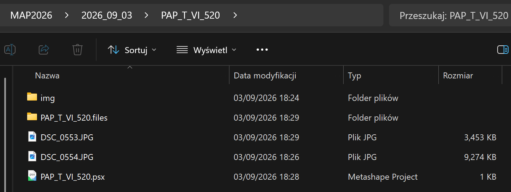

Photogrammetric Documentation Workflow (Metashape)
1. Import Images
Create a directory named with the acquisition date (e.g. 2018_08_04).
Inside this directory, create a project directory named according to the trench and context number, for example:
PAP_T_II_154MAL_TT_IV_186_187
Within the project folder:
- store all photographs intended for photogrammetric processing in an
imgsubdirectory, - store additional documentary photographs separately.

2. Save the Project
Save the Metashape project using the following naming convention:
MAL/PAP_trench_context.psx
Example:
PAP_T_VI_520.psx
3. Assess Image Quality
Run: Tools → Estimate Image Quality...
Review a few images with the lowest quality values and identify blurred or problematic photographs.
Show Screenshot Hint

4. Align Images
Run: Workflow → Align Photos...
Recommended settings:
- Accuracy: High
- Pair Preselection: Disabled
- (Advanced) Key point limit: 40 000
- (Advanced) Tie point limit: 4 000
Show Screenshot Hint

5. Verify Camera Alignment
Inspect the sparse point cloud and camera positions.
Confirm that:
- camera alignment is correct,
- image orientation is logical,
- no misaligned cameras are present.
6. Detect Markers
Run: Tools → Markers → Detect Markers...
Recommended settings:
- Marker Type: Cross (non-coded)
- Tolerance: 10 (or higher if necessary)
- Maximum residual (pix): 3 (or higher if necessary)
Show Screenshot Hint

7. Assign Marker IDs
Review detected markers and assign the correct marker identifiers.
Show Screenshot Hint


8. Import Control Point Coordinates
Import the coordinate file containing the surveyed marker coordinates.
9. Complete Missing Marker Measurements
If any markers were not detected automatically, manually place marker projections on the relevant photographs.
Show Screenshot Hint

10. Check Georeferencing Accuracy
Verify the marker residuals and overall georeferencing quality.
A Total Error of approximately 1 cm (0.010 m) or less is generally acceptable for archaeological documentation.
Show Screenshot Hint

11. Generate Point Cloud
Run: Workflow → Build Dense Cloud...
Recommended settings:
- Quality: Low
- (Advanced) Depth filtering: Mild
Show Screenshot Hint

12. Inspect the Dense Point Cloud
Check the dense point cloud for:
- gaps,
- areas with insufficient coverage,
- reconstruction artefacts.
13. Define the Reconstruction Region
If necessary, adjust the bounding box using:
Resize Region and Rotate Region
Limit the processing area to the archaeological feature or context being documented.
14. Build the Mesh
Run: Workflow → Build Model...
Recommended settings:
- Source data: Depth maps
- Quality: Low
- Face count: Medium
Show Screenshot Hint

15. Inspect the Mesh
Review the mesh geometry and verify that:
- the reconstructed surface accurately represents the archaeological context,
- no significant artefacts are present.
16. Build the Texture
Run: Workflow → Build Texture...
Recommended settings:
- Texture type: Diffuse map
- Source data: Images
- Mapping mode: Generic
- Blending mode: Mosaic (default)
- Texture size: 4096
- Page count: 1
Show Screenshot Hint

17. Verify Texture Quality
Inspect the textured model and check for:
- blurred areas,
- texture seams,
- colour inconsistencies,
- missing texture coverage.
The project is now ready to be saved for later (automatic) recomputation and export as archaeological documentation.